Plot Snippets - ggplot2
Foreword
- Output options: the ‘tango’ syntax and the ‘readable’ theme.
- Snippets and results.
Documentation¶
Dataset¶
For most examples, we use the mtcars, diamonds, iris, ChickWeight, recess, fish, Vocab, Titanic, mamsleep, barley, adult datasets.
The ggplot2 Package¶
1 | library(ggplot2) |
Import additional packages.
1 2 3 4 5 6 7 8 9 | library(digest) library(grid) library(gtable) library(MASS) library(plyr) library(reshape2) library(scales) library(stats) library(tidyr) |
For this project, import additional packages.
1 2 3 4 5 6 7 | library(ggthemes) library(RColorBrewer) library(gridExtra) library(GGally) library(car) library(Hmisc) library(dplyr) |
Suggested additional packages…
SECTION 1¶
Introduction¶
Exploring ggplot2, part 1
1 2 3 | # basic plot ggplot(mtcars, aes(x = cyl, y = mpg)) + geom_point() |

Exploring ggplot2, part 2
1 2 3 | # cyl is a factor ggplot(mtcars, aes(x = factor(cyl), y = mpg)) + geom_point() |

Exploring ggplot2, part 3
1 2 3 | # scatter plot ggplot(mtcars, aes(x = wt, y = mpg)) + geom_point() |

1 2 3 | # add color ggplot(mtcars, aes(x = wt, y = mpg, col = disp)) + geom_point() |
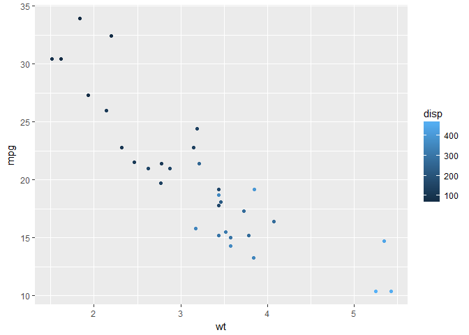
1 2 3 | # change size ggplot(mtcars, aes(x = wt, y = mpg, size = disp)) + geom_point() |

Exploring ggplot2, part 4
1 2 3 | # Add geom_point() with + ggplot(diamonds, aes(x = Carat, y = PricePerCt)) + geom_point() |

1 2 3 | # Add geom_point() and geom_smooth() with + ggplot(diamonds, aes(x = Carat, y = PricePerCt)) + geom_point() + geom_smooth() |

Exploring ggplot2, part 5
1 2 3 | # only the smooth line ggplot(diamonds, aes(x = Carat, y = PricePerCt)) + geom_smooth() |
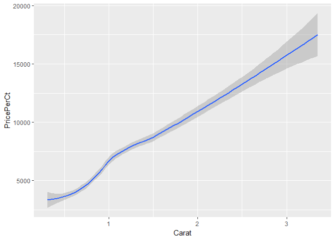
1 2 3 | # change col ggplot(diamonds, aes(x = Carat, y = PricePerCt, col = Clarity)) + geom_point() |

1 2 3 | # change the alpha ggplot(diamonds, aes(x = Carat, y = PricePerCt, col = Clarity)) + geom_point(alpha = 0.4) |

Exploring ggplot2, part 6
1 2 3 4 5 6 7 8 9 10 11 12 13 14 15 16 | # 2 facets for comparison library(gridExtra) data(father.son, package = 'UsingR') a <- ggplot(father.son, aes(fheight, sheight)) + geom_point() + geom_smooth(method = 'lm', colour = 'red') + geom_abline(slope = 1, intercept = 0) b <- ggplot(father.son, aes(fheight, sheight)) + geom_point() + geom_smooth(method = 'lm', colour = 'red', se = FALSE) + stat_smooth() grid.arrange(a, b, nrow = 1) |

1 2 3 4 5 6 7 | # load more data data(oly12, package = 'VGAMdata') # 2 facets for comparison ggplot(oly12, aes(Height, Weight)) + geom_point(size = 1) + facet_wrap(~Sex, ncol = 1) |

1 2 3 4 5 6 7 8 | # create a new variable inside de data frame oly12S <- within(oly12, oly12$Sport <- abbreviate(oly12$Sport, 12)) # multiple facets or splom ggplot(oly12S, aes(Height, Weight)) + geom_point(size = 1) + facet_wrap(~Sport) + ggtitle('Weight and Height by Sport') |

Understanding the grammar, part 1
1 2 3 4 5 6 | # create the object containing the data and aes layers dia_plot <- ggplot(diamonds, aes(x = Carat, y = PricePerCt)) # add a geom layer dia_plot + geom_point() |

1 2 3 | # add the same geom layer, but with aes() inside dia_plot + geom_point(aes(col = Clarity)) |

Understanding the grammar, part 2
1 2 3 4 5 6 7 8 9 10 | set.seed(1) # create the object containing the data and aes layers dia_plot <- ggplot(diamonds, aes(x = Carat, y = PricePerCt)) # add geom_point() with alpha set to 0.2 dia_plot <- dia_plot + geom_point(alpha = 0.2) dia_plot |

1 2 3 | # plot dia_plot with additional geom_smooth() with se set to FALSE dia_plot + geom_smooth(se = FALSE) |
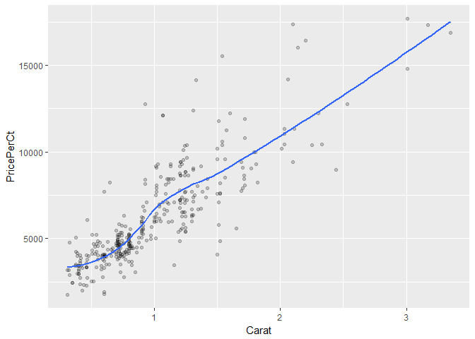
Data¶
Base package and ggplot2, part 1 - plot
1 2 | # basic plot plot(mtcars$wt, mtcars$mpg, col = mtcars$cyl) |

1 2 3 4 5 | # change cyl inside mtcars to a factor mtcars$cyl <- as.factor(mtcars$cyl) # make the same plot as in the first instruction plot(mtcars$wt, mtcars$mpg, col = mtcars$cyl) |

Base package and ggplot2, part 2 - lm
transfer to other
1 2 3 4 5 6 7 8 9 10 11 12 13 14 | # Basic plot mtcars$cyl <- as.factor(mtcars$cyl) plot(mtcars$wt, mtcars$mpg, col = mtcars$cyl) # use lm() to calculate a linear model and save it as carModel carModel <- lm(mpg ~ wt, data = mtcars) # Call abline() with carModel as first argument and lty as second abline(carModel, lty = 2) # plot each subset efficiently with lapply lapply(mtcars$cyl, function(x) { abline(lm(mpg ~ wt, mtcars, subset = (cyl == x)), col = x) }) |
1 2 3 4 5 6 7 8 9 10 11 12 13 14 15 16 17 18 19 20 21 22 23 24 25 26 27 28 29 30 31 32 33 34 35 36 37 38 39 40 41 42 43 44 45 46 47 48 49 50 51 52 53 54 55 56 57 58 59 60 61 62 63 64 65 66 67 68 69 70 71 72 73 74 75 76 77 78 79 80 81 82 83 84 85 86 87 88 89 90 91 92 93 94 95 | ## [[1]] ## NULL ## ## [[2]] ## NULL ## ## [[3]] ## NULL ## ## [[4]] ## NULL ## ## [[5]] ## NULL ## ## [[6]] ## NULL ## ## [[7]] ## NULL ## ## [[8]] ## NULL ## ## [[9]] ## NULL ## ## [[10]] ## NULL ## ## [[11]] ## NULL ## ## [[12]] ## NULL ## ## [[13]] ## NULL ## ## [[14]] ## NULL ## ## [[15]] ## NULL ## ## [[16]] ## NULL ## ## [[17]] ## NULL ## ## [[18]] ## NULL ## ## [[19]] ## NULL ## ## [[20]] ## NULL ## ## [[21]] ## NULL ## ## [[22]] ## NULL ## ## [[23]] ## NULL ## ## [[24]] ## NULL ## ## [[25]] ## NULL ## ## [[26]] ## NULL ## ## [[27]] ## NULL ## ## [[28]] ## NULL ## ## [[29]] ## NULL ## ## [[30]] ## NULL ## ## [[31]] ## NULL ## ## [[32]] ## NULL |
1 2 | # draw the legend of the plot legend(x = 5, y = 33, legend = levels(mtcars$cyl), col = 1:3, pch = 1, bty = 'n') |

Base package and ggplot2, part 3
1 2 3 | # scatter plot ggplot(mtcars, aes(x = wt, y = mpg, col = cyl)) + geom_point() |

1 2 3 4 | # include the lines of the linear models, per cyl ggplot(mtcars, aes(x = wt, y = mpg, col = cyl)) + geom_point() + geom_smooth(method = 'lm', se = FALSE) |

1 2 3 4 5 | # include a lm for the entire dataset in its whole ggplot(mtcars, aes(x = wt, y = mpg, col = cyl)) + geom_point() + geom_smooth(method = 'lm', se = FALSE) + geom_smooth(aes(group = 1), method = 'lm', se = FALSE, linetype = 2) |

Variables to visuals, part 1
1 2 3 4 5 6 7 | iris.tidy <- iris %>% gather(key, Value, -Species) %>% separate(key, c('Part', 'Measure'), '\\.') # create 2 facets ggplot(iris.tidy, aes(x = Species, y = Value, col = Part)) + geom_jitter() + facet_grid(. ~ Measure) |

Variables to visuals, part 2
1 2 3 4 5 6 7 8 9 10 11 12 | # Add a new column, Flower, to iris that contains unique ids iris$Flower <- 1:nrow(iris) iris.wide <- iris %>% gather(key, value, -Species, -Flower) %>% separate(key, c('Part', 'Measure'), '\\.') %>% spread(Measure, value) # create 3 facets ggplot(iris.wide, aes(x = Length, y = Width, col = Part)) + geom_jitter() + facet_grid(. ~ Species) |

Aesthetics¶
All about aesthetics, part 1
1 2 3 | # map cyl to y ggplot(mtcars, aes(x = mpg, y = cyl)) + geom_point() |

1 2 3 | # map cyl to x ggplot(mtcars, aes(y = mpg, x = cyl)) + geom_point() |
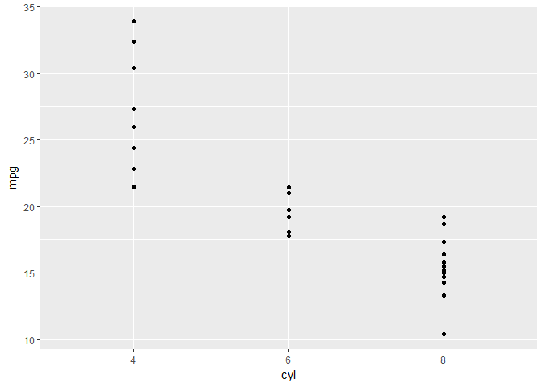
1 2 3 | # map cyl to col ggplot(mtcars, aes(x = wt, y = mpg, col = cyl)) + geom_point() |

1 2 3 | # change shape and size of the points ggplot(mtcars, aes(x = wt, y = mpg, col = cyl)) + geom_point(shape = 1, size = 4) |

All about aesthetics, part 2
1 2 3 | # map cyl to fill ggplot(mtcars, aes(x = wt, y = mpg, fill = cyl)) + geom_point() |

1 2 3 | # Change shape, size and alpha of the points in the above plot ggplot(mtcars, aes(x = wt, y = mpg, fill = cyl)) + geom_point(shape = 16, size = 6, alpha = 0.6) |

All about aesthetics, part 3
1 2 3 | # map cyl to size ggplot(mtcars, aes(x = wt, y = mpg, size = cyl)) + geom_point() |

1 2 3 | # map cyl to alpha ggplot(mtcars, aes(x = wt, y = mpg, alpha = cyl)) + geom_point() |

1 2 3 | # map cyl to shape ggplot(mtcars, aes(x = wt, y = mpg, shape = cyl, label = cyl)) + geom_point() |
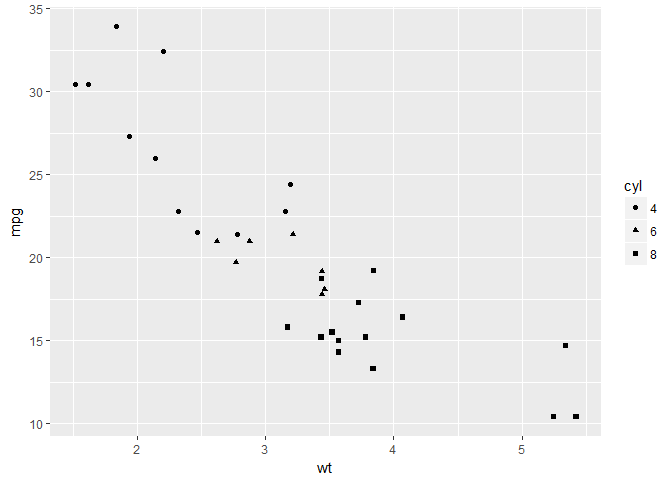
1 2 3 | # map cyl to labels ggplot(mtcars, aes(x = wt, y = mpg, label = cyl)) + geom_text() |
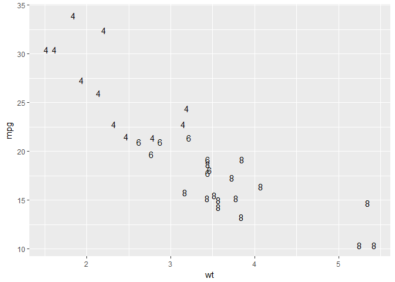
All about attributes, part 1
1 2 3 4 5 6 | # define a hexadecimal color my_color <- '#123456' # set the color aesthetic ggplot(mtcars, aes(x = wt, y = mpg, col = cyl)) + geom_point() |

1 2 3 | # set the color aesthetic and attribute ggplot(mtcars, aes(x = wt, y = mpg, col = cyl)) + geom_point(col = my_color) |

1 2 3 | # set the fill aesthetic and color, size and shape attributes ggplot(mtcars, aes(x = wt, y = mpg, fill = cyl)) + geom_point(size = 10, shape = 23, col = my_color) |

All about attributes, part 2
1 2 3 | # draw points with alpha 0.5 ggplot(mtcars, aes(x = wt, y = mpg, fill = cyl)) + geom_point(alpha = 0.5) |

1 2 3 | # raw points with shape 24 and color yellow ggplot(mtcars, aes(x = wt, y = mpg, fill = cyl)) + geom_point(shape = 24, col = 'yellow') |

1 2 3 | # draw text with label x, color red and size 10 ggplot(mtcars, aes(x = wt, y = mpg, fill = cyl)) + geom_text(label = 'x', col = 'red', size = 10) |

Going all out
1 2 3 | # Map mpg onto x, qsec onto y and factor(cyl) onto col ggplot(mtcars, aes(x = mpg, y = qsec, col = factor(cyl))) + geom_point() |

1 2 3 | # Add mapping: factor(am) onto shape ggplot(mtcars, aes(x = mpg, y = qsec, col = factor(cyl), shape = factor(am))) + geom_point() |

1 2 3 | # Add mapping: (hp/wt) onto size ggplot(mtcars, aes(x = mpg, y = qsec, col = factor(cyl), shape = factor(am), size = hp/wt)) + geom_point() |

1 2 3 | # Add mapping: rownames(mtcars) onto label ggplot(mtcars, aes(x = mpg, y = qsec, col = factor(cyl), shape = factor(am), size = hp/wt)) + geom_text(aes(label = rownames(mtcars))) |

Position
1 2 3 4 5 6 | # base layers cyl.am <- ggplot(mtcars, aes(x = factor(cyl), fill = factor(am))) # add geom (position = 'stack'' by default) cyl.am + geom_bar(position = 'stack') |

1 2 3 | # show proportion cyl.am + geom_bar(position = 'fill') |

1 2 3 | # dodging cyl.am + geom_bar(position = 'dodge') |

1 2 3 4 5 6 7 8 | # clean up the axes with scale_ functions val = c('#E41A1C', '#377EB8') lab = c('Manual', 'Automatic') cyl.am + geom_bar(position = 'dodge', ) + scale_x_discrete('Cylinders') + scale_y_continuous('Number') + scale_fill_manual('Transmission', values = val, labels = lab) |

Setting a dummy aesthetic
1 2 3 4 5 | # add a new column called group mtcars$group <- 0 # create jittered plot of mtcars: mpg onto x, group onto y ggplot(mtcars, aes(x = mpg, y = group)) + geom_jitter() |

1 2 3 4 | # change the y aesthetic limits ggplot(mtcars, aes(x = mpg, y = group)) + geom_jitter() + scale_y_continuous(limits = c(-2, 2)) |

Overplotting 1 - Point shape and transparency
1 2 3 | # basic scatter plot: wt on x-axis and mpg on y-axis; map cyl to col ggplot(mtcars, aes(x = wt, y = mpg, col = cyl)) + geom_point(size = 4) |
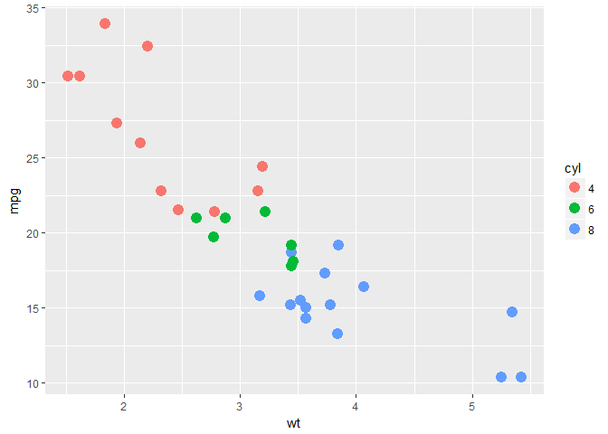
1 2 3 | # hollow circles - an improvement ggplot(mtcars, aes(x = wt, y = mpg, col = cyl)) + geom_point(size = 4, shape = 1) |
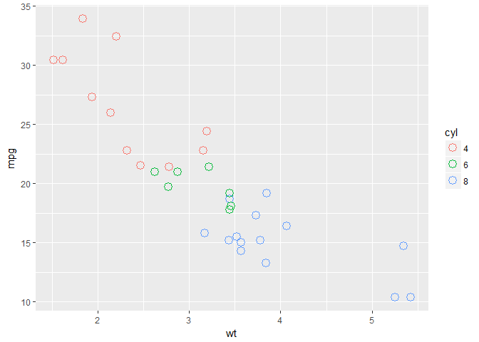
1 2 3 | # add transparency - very nice ggplot(mtcars, aes(x = wt, y = mpg, col = cyl)) + geom_point(size = 4, shape = 1, alpha = 0.6) |
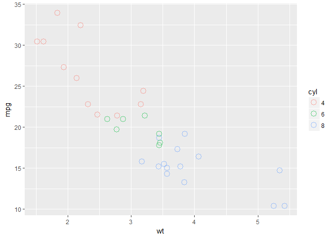
Overplotting 2 - alpha with large datasets
1 2 3 | # scatter plot: carat (x), price (y), clarity (col) ggplot(diamonds, aes(x = Carat, y = PricePerCt, col = Clarity)) + geom_point() |

1 2 3 | # adjust for overplotting ggplot(diamonds, aes(x = Carat, y = PricePerCt, col = Clarity)) + geom_point(alpha = 0.5) |

1 2 3 | # scatter plot: clarity (x), carat (y), price (col) ggplot(diamonds, aes(x = Clarity, y = Carat, col = PricePerCt)) + geom_point(alpha = 0.5) |

1 2 3 | # dot plot with jittering ggplot(diamonds, aes(x = Clarity, y = Carat, col = PricePerCt)) + geom_point(alpha = 0.5, position = 'jitter') |

Geometries¶
Scatter plots and jittering (1)
1 2 3 | # plot the cyl on the x-axis and wt on the y-axis ggplot(mtcars, aes(x = cyl, y = wt)) + geom_point() |

1 2 3 | # Use geom_jitter() instead of geom_point() ggplot(mtcars, aes(x = cyl, y = wt)) + geom_jitter() |

1 2 3 4 5 6 | # Define the position object using position_jitter(): posn.j posn.j <- position_jitter(0.1) # Use posn.j in geom_point() ggplot(mtcars, aes(x = cyl, y = wt)) + geom_point(position = posn.j) |

Scatter plots and jittering (2)
1 2 3 | # scatter plot of vocabulary (y) against education (x). Use geom_point() ggplot(Vocab, aes(x = education, y = vocabulary)) + geom_point() |
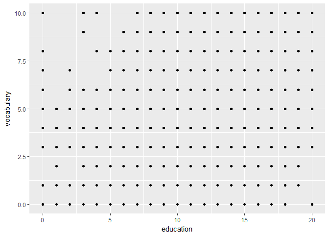
1 2 3 | # use geom_jitter() instead of geom_point() ggplot(Vocab, aes(x = education, y = vocabulary)) + geom_jitter() |

1 2 3 | # set alpha to a very low 0.2 ggplot(Vocab, aes(x = education, y = vocabulary)) + geom_jitter(alpha = 0.2) |

1 2 3 | # set the shape to 1 ggplot(Vocab, aes(x = education, y = vocabulary)) + geom_jitter(alpha = 0.2, shape = 1) |

Histograms
1 2 3 | # univariate histogram ggplot(mtcars, aes(x = mpg)) + geom_histogram() |

1 2 3 | # change the bin width to 1 ggplot(mtcars, aes(x = mpg)) + geom_histogram(binwidth = 1) |

1 2 3 | # change the y aesthetic to density ggplot(mtcars, aes(x = mpg)) + geom_histogram(aes(y = ..density..), binwidth = 1) |

1 2 3 4 5 6 | # custom color code myBlue <- '#377EB8' # Change the fill color to myBlue ggplot(mtcars, aes(x = mpg)) + geom_histogram(aes(y = ..density..), binwidth = 1, fill = myBlue) |

Position
1 2 3 4 5 | mtcars$am <- as.factor(mtcars$am) # bar plot of cyl, filled according to am ggplot(mtcars, aes(x = cyl, fill = am)) + geom_bar() |

1 2 3 | # change the position argument to stack ggplot(mtcars, aes(x = cyl, fill = am)) + geom_bar(position = 'stack') |

1 2 3 | # change the position argument to fill ggplot(mtcars, aes(x = cyl, fill = am)) + geom_bar(position = 'fill') |

1 2 3 | # change the position argument to dodge ggplot(mtcars, aes(x = cyl, fill = am)) + geom_bar(position = 'dodge') |
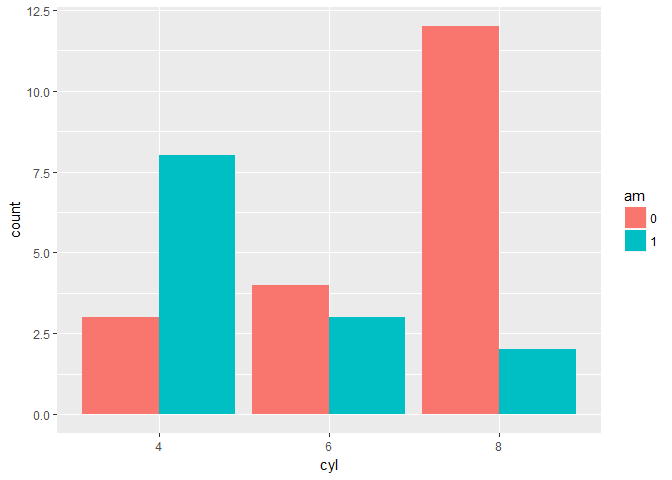
Overlapping bar plots
1 2 3 | # bar plot of cyl, filled according to am ggplot(mtcars, aes(x = cyl, fill = am)) + geom_bar() |

1 2 3 | # change the position argument to 'dodge' ggplot(mtcars, aes(x = cyl, fill = am)) + geom_bar(position = 'dodge') |

1 2 3 4 5 6 | # define posn_d with position_dodge() posn_d <- position_dodge(0.2) # change the position argument to posn_d ggplot(mtcars, aes(x = cyl, fill = am)) + geom_bar(position = posn_d) |

1 2 3 | # use posn_d as position and adjust alpha to 0.6 ggplot(mtcars, aes(x = cyl, fill = am)) + geom_bar(position = posn_d, alpha = 0.6) |

Overlapping histograms
1 2 3 | # histogram, add coloring defined by cyl ggplot(mtcars, aes(mpg, fill = cyl)) + geom_histogram(binwidth = 1) |

1 2 3 | # change position to identity ggplot(mtcars, aes(mpg, fill = cyl)) + geom_histogram(binwidth = 1, position = 'identity') |
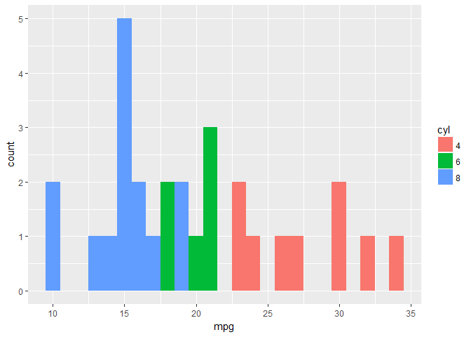
1 2 3 | # change geom to freqpoly (position is identity by default) ggplot(mtcars, aes(mpg, col = cyl)) + geom_freqpoly(binwidth = 1) |
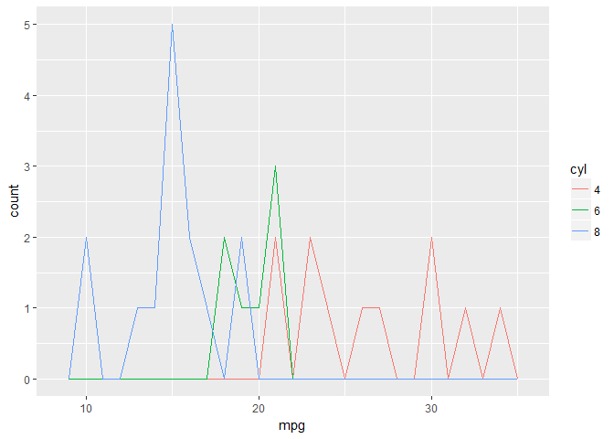
Facets or splom histograms
1 2 3 4 5 6 7 8 9 10 11 | # load the package library(reshape2) # load new data data(uniranks, package = 'GDAdata') # name the variables names(uniranks)[c(5, 6, 8, 8, 10, 11, 13)] <- c('AvTeach', 'NSSTeach', 'SpendperSt', 'StudentStaffR', 'Careers', 'VAddScore', 'NSSFeedb') # reshape the data frame ur2 <- melt(uniranks[, c(3, 5:13)], id.vars = 'UniGroup', variable.name = 'uniV', value.name = 'uniX') |
1 2 3 4 5 6 | # Splom ggplot(ur2, aes(uniX)) + geom_histogram() + xlab('') + ylab('') + facet_grid(UniGroup ~ uniV, scales = 'free_x') |

1 2 3 4 5 6 7 8 9 10 11 12 | library(ggplot2) library(gridExtra) data(Pima.tr2, package = 'MASS') h1 <- ggplot(Pima.tr2, aes(glu)) + geom_histogram() h2 <- ggplot(Pima.tr2, aes(bp)) + geom_histogram() h3 <- ggplot(Pima.tr2, aes(skin)) + geom_histogram() h4 <- ggplot(Pima.tr2, aes(bmi)) + geom_histogram() h5 <- ggplot(Pima.tr2, aes(ped)) + geom_histogram() h6 <- ggplot(Pima.tr2, aes(age)) + geom_histogram() grid.arrange(h1, h2, h3, h4, h5, h6, nrow = 2) |
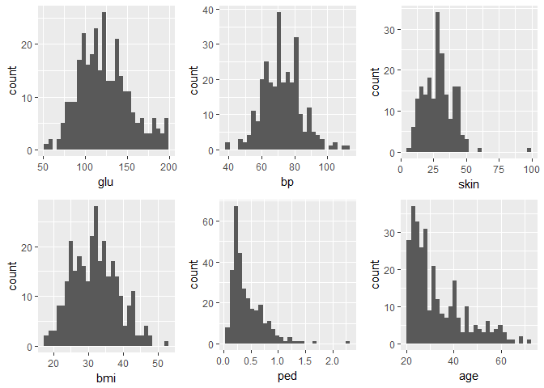
Bar plots with color ramp, part 1
1 2 3 4 | # Example of how to use a brewed color palette ggplot(mtcars, aes(x = cyl, fill = am)) + geom_bar() + scale_fill_brewer(palette = 'Set1') |

1 2 3 4 5 6 | Vocab$education <- as.factor(Vocab$education) Vocab$vocabulary <- as.factor(Vocab$vocabulary) # Plot education on x and vocabulary on fill # Use the default brewed color palette ggplot(Vocab, aes(x = education, fill = vocabulary)) + geom_bar(position = 'fill') + scale_fill_brewer(palette = 'Set3') |

Bar plots with color ramp, part 2
1 2 3 4 5 6 7 8 9 10 | # Definition of a set of blue colors blues <- brewer.pal(9, 'Blues') # Make a color range using colorRampPalette() and the set of blues blue_range <- colorRampPalette(blues) # Use blue_range to adjust the color of the bars, use scale_fill_manual() ggplot(Vocab, aes(x = education, fill = vocabulary)) + geom_bar(position = 'fill') + scale_fill_manual(values = blue_range(11)) |

Overlapping histograms (2)
1 2 | # histogram ggplot(mtcars, aes(mpg)) + geom_histogram(binwidth = 1) |
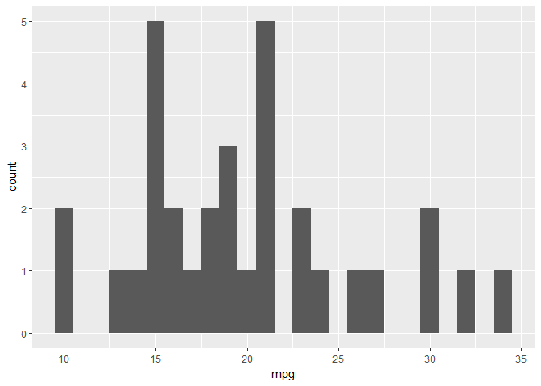
1 2 3 | # expand the histogram to fill using am ggplot(mtcars, aes(mpg, fill = am)) + geom_histogram(binwidth = 1) |

1 2 3 | # change the position argument to 'dodge' ggplot(mtcars, aes(mpg, fill = am)) + geom_histogram(position = 'dodge', binwidth = 1) |

1 2 3 | # change the position argument to 'fill' ggplot(mtcars, aes(mpg, fill = am)) + geom_histogram(position = 'fill', binwidth = 1) |

1 2 3 | # change the position argument to 'identity' and set alpha to 0.4 ggplot(mtcars, aes(mpg, fill = am)) + geom_histogram(position = 'identity', binwidth = 1, alpha = 0.4) |

1 2 3 | # change fill to cyl ggplot(mtcars, aes(mpg, fill = cyl)) + geom_histogram(position = 'identity', binwidth = 1, alpha = 0.4) |

Line plots
1 2 3 | # plot unemploy as a function of date using a line plot ggplot(economics, aes(x = date, y = unemploy)) + geom_line() |

1 2 3 | # adjust plot to represent the fraction of total population that is unemployed ggplot(economics, aes(x = date, y = unemploy/pop)) + geom_line() |

Periods of recession
1 2 3 4 | # draw the recess periods ggplot(economics, aes(x = date, y = unemploy/pop)) + geom_line() + geom_rect(data = recess, inherit.aes = FALSE, aes(xmin = begin, xmax = end, ymin = -Inf, ymax = +Inf), fill = 'red', alpha = 0.2) |

Multiple time series, part 1
1 2 | # use gather to go from fish to fish.tidy. fish.tidy <- gather(fish, Species, Capture, -Year) |
Multiple time series, part 2
1 2 3 | # plot ggplot(fish.tidy, aes(x = Year, y = Capture, col = Species)) + geom_line() |

qplot and wrap-up¶
Using qplot
1 2 | # the old way plot(mpg ~ wt, data = mtcars) |

1 2 3 | # using ggplot ggplot(mtcars, aes(x = wt, y = mpg)) + geom_point(shape = 1) |

1 2 | # Using qplot qplot(wt, mpg, data = mtcars) |

Using aesthetics
1 2 | # Categorical: cyl qplot(wt, mpg, data = mtcars, size = cyl) |

1 2 | # gear qplot(wt, mpg, data = mtcars, size = gear) |

1 2 | # Continuous: hp qplot(wt, mpg, data = mtcars, col = hp) |
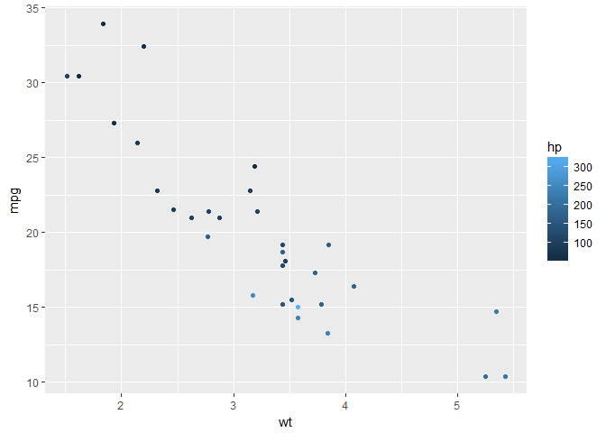
1 2 | # qsec qplot(wt, mpg, data = mtcars, size = qsec) |

Choosing geoms, part 1
1 2 | # qplot() with x only qplot(factor(cyl), data = mtcars) |

1 2 | # qplot() with x and y qplot(factor(cyl), factor(vs), data = mtcars) |

1 2 | # qplot() with geom set to jitter manually qplot(factor(cyl), factor(vs), data = mtcars, geom = 'jitter') |
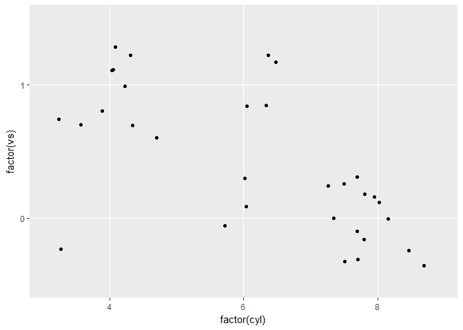
Choosing geoms, part 2 - dotplot
1 2 3 | # make a dot plot with ggplot ggplot(mtcars, aes(cyl, wt, fill = am)) + geom_dotplot(stackdir = 'center', binaxis = 'y') |

1 2 | # qplot with geom 'dotplot', binaxis = 'y' and stackdir = 'center' qplot(as.numeric(cyl), wt, data = mtcars, fill = am, geom = 'dotplot', stackdir = 'center', binaxis = 'y') |

Chicken weight
1 2 3 | # base ggplot(ChickWeight, aes(x = Time, y = weight)) + geom_line(aes(group = Chick)) |

1 2 3 | # color ggplot(ChickWeight, aes(x = Time, y = weight, col = Diet)) + geom_line(aes(group = Chick)) |
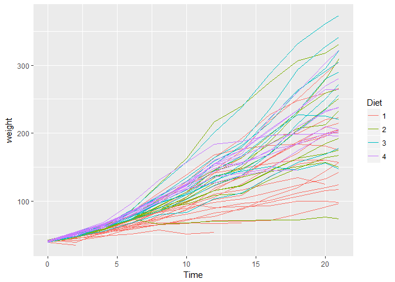
1 2 3 4 | # lines ggplot(ChickWeight, aes(x = Time, y = weight, col = Diet)) + geom_line(aes(group = Chick), alpha = 0.3) + geom_smooth(lwd = 2, se = FALSE) |

Titanic
1 2 3 | # Use ggplot() for the first instruction ggplot(titanic, aes(x = factor(Pclass), fill = factor(Sex))) + geom_bar(position = 'dodge') |

1 2 3 4 | # Use ggplot() for the second instruction ggplot(titanic, aes(x = factor(Pclass), fill = factor(Sex))) + geom_bar(position = 'dodge') + facet_grid('. ~ Survived') |

1 2 3 4 5 6 7 | # position jitter posn.j <- position_jitter(0.5, 0) # Use ggplot() for the last instruction ggplot(titanic, aes(x = factor(Pclass), y = Age, col = factor(Sex))) + geom_jitter(size = 3, alpha = 0.5, position = posn.j) + facet_grid('. ~ Survived') |

SECTION 2¶
Statistics¶
Smoothing
1 2 3 4 | # scatter plot with LOESS smooth with a CI ribbon ggplot(mtcars, aes(x = wt, y = mpg)) + geom_point() + geom_smooth() |

1 2 3 4 | # scatter plot with LOESS smooth without CI ggplot(mtcars, aes(x = wt, y = mpg)) + geom_point() + geom_smooth(se = FALSE) |

1 2 3 4 | # scatter plot with an OLS linear model ggplot(mtcars, aes(x = wt, y = mpg)) + geom_point() + geom_smooth(method = 'lm') |

1 2 3 | # scatter plot with an OLS linear model without points ggplot(mtcars, aes(x = wt, y = mpg)) + geom_smooth(method = 'lm', se = FALSE) |

Grouping variables
1 2 3 4 | # cyl as a factor variable ggplot(mtcars, aes(x = wt, y = mpg, col = factor(cyl))) + geom_point() + stat_smooth(method = 'lm', se = FALSE) |

1 2 3 4 | # set the group aesthetic ggplot(mtcars, aes(x = wt, y = mpg, col = factor(cyl), group = 1)) + geom_point() + stat_smooth(method = 'lm', se = F) |

1 2 3 4 5 | # add a second smooth layer in which the group aesthetic is set ggplot(mtcars, aes(x = wt, y = mpg, col = factor(cyl))) + geom_point() + stat_smooth(method = 'lm', se = FALSE) + stat_smooth(method = 'lm', se = FALSE, aes(group = 1)) |

Modifying stat_smooth
1 2 3 4 | # change the LOESS span ggplot(mtcars, aes(x = wt, y = mpg)) + geom_point() + geom_smooth(se = FALSE, span = 0.7, method = 'auto') |

1 | # method = 'auto' is by default
|
1 2 3 4 5 | # set the model to the default LOESS and use a span of 0.7 ggplot(mtcars, aes(x = wt, y = mpg, col = factor(cyl))) + geom_point() + stat_smooth(method = 'lm', se = FALSE) + stat_smooth(method = 'auto', se = FALSE, aes(group = 1), col = 'black', span = 0.7) |

1 2 3 4 5 | # set col to 'All', inside the aes layer ggplot(mtcars, aes(x = wt, y = mpg, col = factor(cyl))) + geom_point() + stat_smooth(method = 'lm', se = FALSE) + stat_smooth(method = 'auto', se = FALSE, aes(group = 1, col = 'All cyl'), span = 0.7) |

1 2 3 4 5 6 7 8 | # add `scale_color_manual` to change the colors myColors <- c(brewer.pal(3, 'Dark2'), 'black') ggplot(mtcars, aes(x = wt, y = mpg, col = factor(cyl))) + geom_point() + stat_smooth(method = 'lm', se = FALSE) + stat_smooth(method = 'auto', se = FALSE, aes(group = 1, col = 'All cyl'), span = 0.7) + scale_color_manual('Cylinders', values = myColors) |

Modifying stat_smooth (2)
1 2 3 4 | # jittered scatter plot, add a linear model (lm) smooth ggplot(Vocab, aes(x = education, y = vocabulary)) + geom_jitter(alpha = 0.2) + stat_smooth(method = 'lm', se = FALSE) |

1 2 3 | # only lm, colored by year ggplot(Vocab, aes(x = education, y = vocabulary, col = factor(year))) + stat_smooth(method = 'lm', se = FALSE) |

1 2 3 4 | # set a color brewer palette ggplot(Vocab, aes(x = education, y = vocabulary, col = factor(year))) + stat_smooth(method = 'lm', se = FALSE) + scale_color_brewer('Accent') |

1 2 3 4 5 | # change col and group, specify alpha, size and geom, and add scale_color_gradient ggplot(Vocab, aes(x = education, y = vocabulary, col = year, group = factor(year))) + stat_smooth(method = 'lm', se = FALSE, alpha = 0.6, size = 2, geom = 'path') + scale_color_brewer('Blues') + scale_color_gradientn(colors = brewer.pal(9, 'YlOrRd')) |
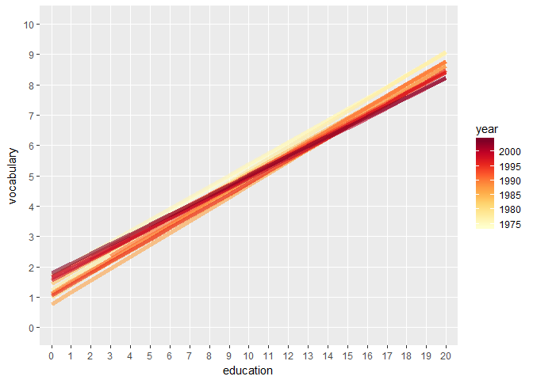
Quantiles
1 2 3 | # use stat_quantile instead of stat_smooth ggplot(Vocab, aes(x = education, y = vocabulary, col = year, group = factor(year))) + stat_quantile(alpha = 0.6, size = 2) + scale_color_gradientn(colors = brewer.pal(9,'YlOrRd')) |

1 2 3 4 | # set quantile to 0.5 ggplot(Vocab, aes(x = education, y = vocabulary, col = year, group = factor(year))) + stat_quantile(alpha = 0.6, size = 2, quantiles = c(0.5)) + scale_color_gradientn(colors = brewer.pal(9,'YlOrRd')) |

Sum
1 2 3 4 5 6 7 | # plot with linear and loess model p <- ggplot(Vocab, aes(x = education, y = vocabulary)) + stat_smooth(method = 'loess', aes(col = 'red'), se = F) + stat_smooth(method = 'lm', aes(col = 'blue'), se = F) + scale_color_discrete('Model', labels = c('red' = 'LOESS', 'blue' = 'lm')) p |

1 2 3 | # add stat_sum (by overall proportion) p + stat_sum() |

1 | #aes(group = 1)
|
1 2 3 4 | # set size range p + stat_sum() + scale_size(range = c(1,10)) |

1 2 3 | # proportional within years of education; set group aesthetic p + stat_sum(aes(group = education)) |

1 2 3 | # set the n p + stat_sum(aes(group = education, size = ..n..)) |

Preparations
1 2 3 4 5 6 7 8 9 10 11 | # convert cyl and am to factors mtcars$cyl <- as.factor(mtcars$cyl) mtcars$am <- as.factor(mtcars$am) # define positions posn.d <- position_dodge(width = 0.1) posn.jd <- position_jitterdodge(jitter.width = 0.1, dodge.width = 0.2) posn.j <- position_jitter(width = 0.2) # base layers wt.cyl.am <- ggplot(mtcars, aes(x = cyl, y = wt, col = am, group = am, fill = am)) |
Plotting variations
1 2 | # base layer wt.cyl.am <- ggplot(mtcars, aes(x = cyl, y = wt, col = am, fill = am, group = am)) |
1 2 3 | # jittered, dodged scatter plot with transparent points wt.cyl.am + geom_point(position = posn.jd, alpha = 0.6) |

1 2 3 | # mean and sd wt.cyl.am + geom_point(position = posn.jd, alpha = 0.6) + stat_summary(fun.data = mean_sdl, fun.args = list(mult = 1), position = posn.d) |

1 2 3 4 | # mean and 95% CI wt.cyl.am + geom_point(position = posn.jd, alpha = 0.6) + stat_summary(fun.data = mean_cl_normal, position = posn.d) |

1 2 3 4 5 | # mean and SD with T-tipped error bars wt.cyl.am + geom_point(position = posn.jd, alpha = 0.6) + stat_summary(geom = 'point', fun.y = mean, position = posn.d) + stat_summary(geom = 'errorbar', fun.data = mean_sdl, fun.args = list(mult = 1), width = 0.1, position = posn.d) |

Coordinates and Facets¶
Zooming In
1 2 3 4 | # basic p <- ggplot(mtcars, aes(x = wt, y = hp, col = am)) + geom_point() + geom_smooth() |
1 2 3 | # add scale_x_continuous p + scale_x_continuous(limits = c(3, 6), expand = c(0,0)) |

1 2 3 | # zoom in p + coord_cartesian(xlim = c(3, 6)) |

Aspect Ratio
1 2 3 4 | # scatter plot base.plot <- ggplot(iris, aes(y = Sepal.Width, x = Sepal.Length, col = Species)) + geom_jitter() + geom_smooth(method = 'lm', se = FALSE) |
1 2 3 4 | # default aspect ratio # fix aspect ratio (1:1) base.plot + coord_equal() |

1 2 | base.plot + coord_fixed() |

Pie Charts
1 2 3 4 5 | # stacked bar plot thin.bar <- ggplot(mtcars, aes(x = 1, fill = cyl)) + geom_bar() thin.bar |

1 2 3 | # convert thin.bar to pie chart thin.bar + coord_polar(theta = 'y') |

1 2 3 4 5 | # create stacked bar plot wide.bar <- ggplot(mtcars, aes(x = 1, fill = cyl)) + geom_bar(width = 1) wide.bar |
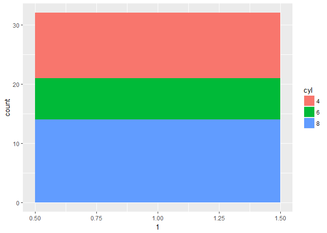
1 2 | # Convert wide.bar to pie chart wide.bar + coord_polar(theta = 'y') |
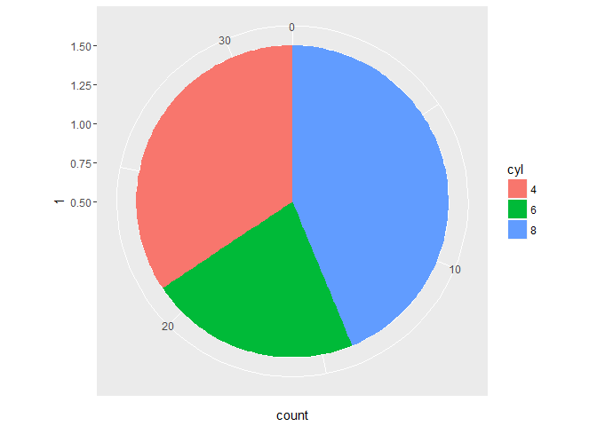
Facets: the basics
1 2 | # scatter plot p <- ggplot(mtcars, aes(x = wt, y = mpg)) + geom_point() |
1 2 3 4 | # separate rows according am # facet_grid(rows ~ cols) p + facet_grid(am ~ .) |

1 2 3 | # separate columns according to cyl # facet_grid(rows ~ cols) p + facet_grid(. ~ cyl) |

1 2 3 4 | # separate by both columns and rows # facet_grid(rows ~ cols) p + facet_grid(am ~ cyl) |

Many variables
1 2 3 4 5 | # create the `cyl_am` col and `myCol` vector mtcars$cyl_am <- paste(mtcars$cyl, mtcars$am, sep = '_') myCol <- rbind(brewer.pal(9, 'Blues')[c(3,6,8)], brewer.pal(9, 'Reds')[c(3,6,8)]) |
1 2 3 4 | # scatter plot, add color scale ggplot(mtcars, aes(x = wt, y = mpg, col = cyl_am)) + geom_point() + scale_color_manual(values = myCol) |

1 2 3 4 5 | # facet according on rows and columns ggplot(mtcars, aes(x = wt, y = mpg, col = cyl_am)) + geom_point() + scale_color_manual(values = myCol) + facet_grid(gear ~ vs) |
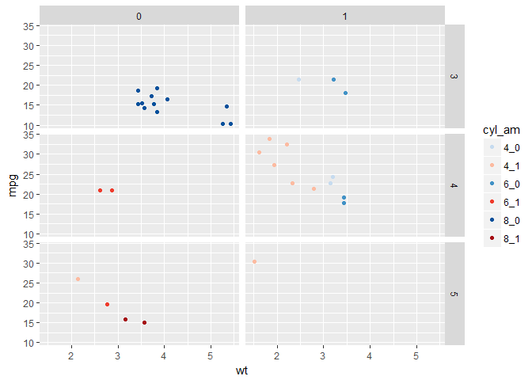
1 2 3 4 5 | # add more variables ggplot(mtcars, aes(x = wt, y = mpg, col = cyl_am, size = disp)) + geom_point() + scale_color_manual(values = myCol) + facet_grid(gear ~ vs) |

Dropping levels
1 2 3 | # scatter plot ggplot(mamsleep, aes(x = time, y = name, col = sleep)) + geom_point() |

1 2 3 4 | # facet rows according to `vore` ggplot(mamsleep, aes(x = time, y = name, col = sleep)) + geom_point() + facet_grid(vore ~ .) |

1 2 3 4 | # specify scale and space arguments to free up rows ggplot(mamsleep, aes(x = time, y = name, col = sleep)) + geom_point() + facet_grid(vore ~ ., scale = 'free_y', space = 'free_y') |

Themes¶
Rectangles
1 2 3 4 5 6 7 8 9 10 11 12 13 14 | # separate columns according to cyl # facet_grid(rows ~ cols) mtcars$cyl <- c(6, 6, 4, 6, 8, 6, 8, 4, 4, 6, 6, 8, 8, 8, 8, 8, 8, 4, 4, 4, 4, 8, 8, 8, 8, 4, 4, 4, 8, 6, 8, 4) mtcars$Cylinders <- factor(mtcars$cyl) z <- ggplot(mtcars, aes(x = wt, y = mpg, col = Cylinders)) + geom_point(size = 2, alpha = 0.7) + facet_grid(. ~ cyl) + labs(x = 'Weight (lb/1000)', y = 'Miles/(US) gallon') + geom_smooth(method = 'lm', se = FALSE) + theme_base() + scale_colour_economist() z |

1 2 3 4 5 | # change the plot background color to myPink (#FEE0D2) myPink <- '#FEE0D2' z + theme(plot.background = element_rect(fill = myPink)) |

1 2 3 | # adjust the border to be a black line of size 3 z + theme(plot.background = element_rect(fill = myPink, color = 'black', size = 3)) |

1 2 3 | # adjust the border to be a black line of size 3 z + theme(plot.background = element_rect(color = 'black', size = 3)) |

1 2 3 | # set panel.background, legend.key, legend.background and strip.background to element_blank() z + theme(plot.background = element_rect(fill = myPink, color = 'black', size = 3), panel.background = element_blank(), legend.key = element_blank(), legend.background = element_blank(), strip.background = element_blank()) |

Lines
1 2 3 | # Extend z with theme() and three arguments z + theme(panel.grid = element_blank(), axis.line = element_line(color = 'black'), axis.ticks = element_line(color = 'black')) |

Text
1 2 3 4 5 | # extend z with theme() function and four arguments myRed <- '#99000D' z + theme(strip.text = element_text(size = 16, color = myRed), axis.title.x = element_text(color = myRed, hjust = 0, face = 'italic'), axis.title.y = element_text(color = myRed, hjust = 0, face = 'italic'), axis.text = element_text(color = 'black')) |

Legends
1 2 3 | # move legend by position z + theme(legend.position = c(0.85, 0.85)) |

1 2 3 | # change direction z + theme(legend.direction = 'horizontal') |

1 2 3 | # change location by name z + theme(legend.position = 'bottom') |

1 2 3 | # remove legend entirely z + theme(legend.position = 'none') |

Positions
1 2 3 | # increase spacing between facets z + theme(panel.margin.x = unit(2, 'cm')) |

1 2 3 | # add code to remove any excess plot margin space z + theme(panel.margin.x = unit(2, 'cm'), plot.margin = unit(c(0,0,0,0), 'cm')) |

Update Themestheme update
1 2 | # theme layer saved as an object, theme_pink theme_pink <- theme(panel.background = element_blank(), legend.key = element_blank(), legend.background = element_blank(), strip.background = element_blank(), plot.background = element_rect(fill = myPink, color = 'black', size = 3), panel.grid = element_blank(), axis.line = element_line(color = 'black'), axis.ticks = element_line(color = 'black'), strip.text = element_text(size = 16, color = myRed), axis.title.y = element_text(color = myRed, hjust = 0, face = 'italic'), axis.title.x = element_text(color = myRed, hjust = 0, face = 'italic'), axis.text = element_text(color = 'black'), legend.position = 'none') |
1 2 3 4 5 | z2 <- z # apply theme_pink to z2 z2 + theme_pink |

1 2 | # change code so that old theme is saved as old old <- theme_update(panel.background = element_blank(), legend.key = element_blank(), legend.background = element_blank(), strip.background = element_blank(), plot.background = element_rect(fill = myPink, color = 'black', size = 3), panel.grid = element_blank(),axis.line = element_line(color = 'black'), axis.ticks = element_line(color = 'black'), strip.text = element_text(size = 16, color = myRed), axis.title.y = element_text(color = myRed, hjust = 0, face = 'italic'), axis.title.x = element_text(color = myRed, hjust = 0, face = 'italic'), axis.text = element_text(color = 'black'), legend.position = 'none') |
1 2 3 4 5 | # display the plot z2 theme_set(theme_pink) z2 + theme_pink |

1 2 3 4 | # restore the old plot theme_set(old) z2 |

Exploring ggthemes
1 2 3 4 5 6 7 | # apply theme_tufte # set the theme with theme_set theme_set(theme_tufte()) # or apply it in the ggplot command z2 + theme_tufte() |

1 2 3 4 5 6 7 8 9 | # apply theme_tufte, modified # set the theme with theme_set theme_set(theme_tufte() + theme(legend.position = c(0.9, 0.9), axis.title = element_text(face = 'italic', size = 12), legend.title = element_text(face = 'italic', size = 12))) # or apply it in the ggplot command z2 + theme_tufte() + theme(legend.position = c(0.9, 0.9), axis.title = element_text(face = 'italic', size = 12), legend.title = element_text(face = 'italic', size = 12)) |

1 2 3 4 5 6 7 | # apply theme_igray # set the theme with `theme_set` theme_set(theme_igray()) # or apply it in the ggplot command z2 + theme_igray() |

1 2 3 4 5 6 7 8 9 10 11 | # apply `theme_igray`, modified # set the theme with `theme_set` theme_set(theme_igray() + theme(legend.position = c(0.9, 0.9), legend.key = element_blank(), legend.background = element_rect(fill = 'grey90'))) z2 + # Or apply it in the ggplot command theme_igray() + theme(legend.position = c(0.9, 0.9), legend.key = element_blank(), legend.background = element_rect(fill = 'grey90')) |

Best Practices¶
Bar Plots (1)
1 2 | # base layers m <- ggplot(mtcars, aes(x = cyl, y = wt)) |
1 2 3 | # dynamite plot m + stat_summary(fun.y = mean, geom = 'bar', fill = 'skyblue') + stat_summary(fun.data = mean_sdl, fun.args = list(mult = 1), geom = 'errorbar', width = 0.1) |

Bar Plots (2)
1 2 | # base layers m <- ggplot(mtcars, aes(x = cyl,y = wt, col = am, fill = am)) |
1 2 3 | # dynamite plot m + stat_summary(fun.y = mean, geom = 'bar') + stat_summary(fun.data = mean_sdl, fun.args = list(mult = 1), geom = 'errorbar', width = 0.1) |
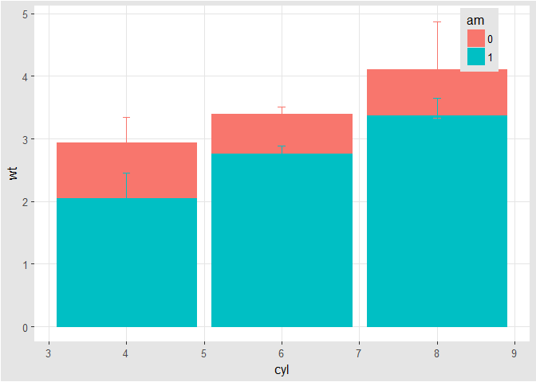
1 2 3 | # set position dodge in each `stat` function m + stat_summary(fun.y = mean, geom = 'bar', position = 'dodge') + stat_summary(fun.data = mean_sdl, fun.args = list(mult = 1), geom = 'errorbar', width = 0.1, position = 'dodge') |

1 2 | # set your dodge `posn` manually posn.d <- position_dodge(0.9) |
1 2 3 | # redraw dynamite plot m + stat_summary(fun.y = mean, geom = 'bar', position = posn.d) + stat_summary(fun.data = mean_sdl, fun.args = list(mult = 1), geom = 'errorbar', width = 0.1, position = posn.d) |

Bar Plots (3)
1 2 3 | # base layers mtcars.cyl <- mtcars %>% group_by(cyl) %>% summarise(wt.avg = mean(wt)) mtcars.cyl |
1 2 3 4 5 6 | ## # A tibble: 3 × 2 ## cyl wt.avg ## <dbl> <dbl> ## 1 4 2.285727 ## 2 6 3.117143 ## 3 8 3.999214 |
1 2 | m <- ggplot(mtcars.cyl, aes(x = cyl, y = wt.avg)) m |

1 2 3 | # draw bar plot m + geom_bar(stat = 'identity', fill = 'skyblue') |

Pie Charts (1)
1 2 | # bar chart to pie chart ggplot(mtcars, aes(x = cyl, fill = am)) + geom_bar(position = 'fill') |

1 | ggplot(mtcars, aes(x = cyl, fill = am)) + geom_bar(position = 'fill') + facet_grid(. ~ cyl) |
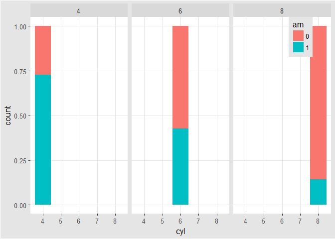
1 | ggplot(mtcars, aes(x = factor(1), fill = am)) + geom_bar(position = 'fill') + facet_grid(. ~ cyl) |

1 | ggplot(mtcars, aes(x = factor(1), fill = am)) + geom_bar(position = 'fill') + facet_grid(. ~ cyl) + coord_polar(theta = 'y') |

1 | ggplot(mtcars, aes(x = factor(1), fill = am)) + geom_bar(position = 'fill', width = 1) + facet_grid(. ~ cyl) + coord_polar(theta = 'y') |
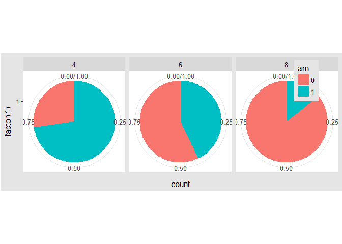
Parallel coordinate plot
1 2 3 4 | # parallel coordinates plot using `GGally` # all columns except `am` (`am` column is the 9th) group_by_am <- 9 my_names_am <- (1:11)[-group_by_am] |
1 2 | # parallel plot; each variable plotted as a z-score transformation ggparcoord(mtcars, columns = my_names_am, groupColumn = group_by_am, alpha = 0.8) |

1 2 | # scaled between 0-1 and most discriminating variable first ggparcoord(mtcars, columns = my_names_am, groupColumn = group_by_am, alpha = 0.8, scale = 'uniminmax', order = 'anyClass') |

1 | ggparcoord(iris, columns = 1:4, groupColumn = 'Species') # xlab, ylab, scale_x_discrete, them |

1 | ggparcoord(iris, columns = 1:4, groupColumn = 'Species', scale = 'uniminmax') |

1 | ggparcoord(iris, columns = 1:4, groupColumn = 'Species', scale = 'globalminmax') |

1 | ggparcoord(iris, columns = 1:4, groupColumn = 'Species', mapping = aes(size = 1)) |

1 | ggparcoord(iris, columns = 1:4, groupColumn = 'Species', alphaLines = 0.3) |

1 | ggparcoord(iris, columns = 1:4, groupColumn = 'Species', scale = 'center') |

1 | ggparcoord(iris, columns = 1:4, groupColumn = 'Species', scaleSummary = 'median', missing = 'exclude') |

1 | ggparcoord(iris, columns = 1:4, groupColumn = 'Species', order = 'allClass') # or custom filter |
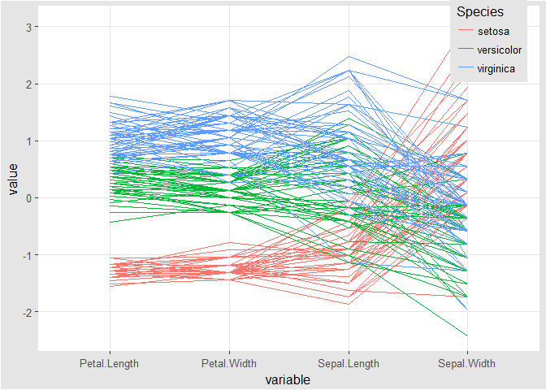
1 | ggparcoord(iris, columns = 1:4, groupColumn = 'Species', scale = 'std') |

Splom
1 2 3 4 5 6 | library(dplyr) data(Pima.tr2, package = 'MASS') PimaV <- select(Pima.tr2, glu:age) ggpairs(PimaV, diag = list(continuous = 'density'), axisLabels = 'show') |

Heat Maps
1 2 | # create color palette myColors <- brewer.pal(9, 'Reds') |
1 2 3 | # heat map ggplot(barley, aes(x = year, y = variety, fill = yield)) + geom_tile() |

1 2 3 4 | # add facet_wrap(~ variable); not like facet_grid(. ~ variable) ggplot(barley, aes(x = year, y = variety, fill = yield)) + geom_tile() + facet_wrap( ~ site, ncol = 1) |

1 2 3 | # ggplot(barley, aes(x = year, y = variety, fill = yield)) + geom_tile() + facet_wrap( ~ site, ncol = 1) + scale_fill_gradientn(colors = myColors) |

Heat Maps Alternatives (1)
1 2 3 | # line plots ggplot(barley, aes(x = year, y = yield, col = variety, group = variety)) + geom_line() + facet_wrap(facets = ~ site, nrow = 1) |

Heat Maps Alternatives (2)
1 2 3 4 | # overlapping ribbon plot ggplot(barley, aes(x = year, y = yield, col = site, group = site, fill = site)) + geom_line() + stat_summary(fun.y = mean, geom = 'line') + stat_summary(fun.data = mean_sdl, fun.args = list(mult = 1), geom = 'ribbon', col = NA, alpha = 0.1) |

Case Study¶
Sort and order
1 2 3 4 5 6 7 8 | # reorder data(Cars93, package = 'MASS') Cars93 <- within(Cars93, TypeWt <- reorder(Type, Weight, mean)) Cars93 <- within(Cars93, Type1 <- factor(Type, levels = c('Small', 'Sporty', 'Compact', 'Midsize', 'Large', 'Van'))) with(Cars93, table(TypeWt, Type1)) |
1 2 3 4 5 6 7 8 | ## Type1 ## TypeWt Small Sporty Compact Midsize Large Van ## Small 21 0 0 0 0 0 ## Sporty 0 14 0 0 0 0 ## Compact 0 0 16 0 0 0 ## Midsize 0 0 0 22 0 0 ## Large 0 0 0 0 11 0 ## Van 0 0 0 0 0 9 |
1 2 3 4 | ggplot(Cars93, aes(TypeWt, 100/MPG.city)) + geom_boxplot() + ylab('Gallons per 100 miles') + xlab('Car type') |

1 2 3 4 5 6 7 8 | Cars93 <- within(Cars93, { levels(Type1) <- c('Small', 'Large', 'Midsize', 'Small', 'Sporty', 'Large') }) ggplot(Cars93, aes(TypeWt, 100/MPG.city)) + geom_boxplot() + ylab('Gallons per 100 miles') + xlab('Car type') |
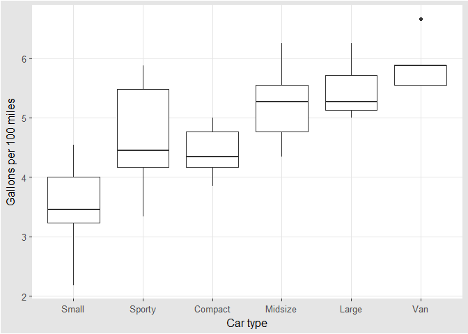
Ensemble plots
1 2 3 4 5 6 7 8 9 10 11 12 13 14 15 16 17 18 19 20 21 22 23 24 25 26 | library(gridExtra) data(Fertility, package = 'AER') p0 <- ggplot(Fertility) + geom_histogram(binwidth = 1) + ylab('') p1 <- p0 + aes(x = age) p2 <- p0 + aes(x = work) + xlab('Weeks worked in 1979') k <- ggplot(Fertility) + geom_bar() + ylab('') + ylim(0, 250000) p3 <- k + aes(x = morekids) + xlab('has more children') p4 <- k + aes(x = gender1) + xlab('first child') p5 <- k + aes(x = gender2) + xlab('second child') p6 <- k + aes(x = afam) + xlab('African-American') p7 <- k + aes(x = hispanic) + xlab('Hispanic') p8 <- k + aes(x = other) + xlab('other race') grid.arrange(arrangeGrob(p1, p2, ncol = 2, widths = c(3, 3)), arrangeGrob(p3, p4, p5, p6, p7, p8, ncol = 6), nrow = 2, heights = c(1.25, 1)) |

Exploring Data
1 2 3 | # histogram ggplot(adult, aes(x = SRAGE_P)) + geom_histogram() |

1 2 3 | # histogram ggplot(adult, aes(x = BMI_P)) + geom_histogram() |
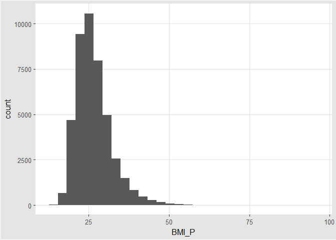
1 2 3 | # color, default binwidth ggplot(adult,aes(x = SRAGE_P, fill = factor(RBMI))) + geom_histogram(binwidth = 1) |

Data Cleaning
1 2 3 4 5 6 7 8 9 10 11 | # remove individual aboves 84 adult <- adult[adult$SRAGE_P <= 84, ] # remove individuals with a BMI below 16 and above or equal to 52 adult <- adult[adult$BMI_P >= 16 & adult$BMI_P < 52, ] # relabel race adult$RACEHPR2 <- factor(adult$RACEHPR2, labels = c('Latino', 'Asian', 'African American', 'White')) # relabel the BMI categories variable adult$RBMI <- factor(adult$RBMI, labels = c('Under-weight', 'Normal-weight', 'Over-weight', 'Obese')) |
Multiple Histograms
1 2 | # color palette BMI_fill BMI_fill <- scale_fill_brewer('BMI Category', palette = 'Reds') |
1 2 3 4 5 | # histogram, add BMI_fill and customizations ggplot(adult, aes(x = SRAGE_P, fill= factor(RBMI))) + geom_histogram(binwidth = 1) + BMI_fill + facet_grid(RBMI ~ .) + theme_classic() |

Alternatives
1 2 3 4 | # count histogram ggplot(adult, aes(x = SRAGE_P, fill = factor(RBMI))) + geom_histogram(binwidth = 1) + BMI_fill |

1 2 3 4 | # density histogram ggplot(adult, aes(x = SRAGE_P, fill= factor(RBMI))) + geom_histogram(aes(y = ..density..), binwidth = 1) + BMI_fill |

1 2 3 4 | # faceted count histogram ggplot(adult, aes(x = SRAGE_P, fill= factor(RBMI))) + geom_histogram(binwidth = 1) + BMI_fill + facet_grid(RBMI ~ .) |

1 2 3 4 | # faceted density histogram ggplot(adult, aes(x = SRAGE_P, fill= factor(RBMI))) + geom_histogram(aes(y = ..density..), binwidth = 1) + BMI_fill + facet_grid(RBMI ~ .) |

1 2 3 4 | # density histogram with `position = 'fill'` ggplot(adult, aes (x = SRAGE_P, fill = factor(RBMI))) + geom_histogram(aes(y = ..density..), binwidth = 1, position = 'fill') + BMI_fill |

1 2 3 4 | # accurate histogram ggplot(adult, aes(x = SRAGE_P, fill = factor(RBMI))) + geom_histogram(aes(y = ..count../sum(..count..)), binwidth = 1, position = 'fill') + BMI_fill |

Do Things Manually
1 2 3 4 5 | # an attempt to facet the accurate frequency histogram from before (failed) ggplot(adult, aes(x = SRAGE_P, fill = factor(RBMI))) + geom_histogram(aes(y = ..count../sum(..count..)), binwidth = 1, position = 'fill') + BMI_fill + facet_grid(RBMI ~ .) |

1 2 3 4 5 6 7 8 9 10 11 | # create DF with `table()` DF <- table(adult$RBMI, adult$SRAGE_P) # use apply on DF to get frequency of each group DF_freq <- apply(DF, 2, function(x) x/sum(x)) # melt on DF to create DF_melted DF_melted <- melt(DF_freq) # change names of DF_melted names(DF_melted) <- c('FILL', 'X', 'value') |
1 2 3 4 5 | # add code to make this a faceted plot ggplot(DF_melted, aes(x = X, y = value, fill = FILL)) + geom_bar(stat = 'identity', position = 'stack') + BMI_fill + facet_grid(FILL ~ .) |

Merimeko/Mosaic Plot
1 2 3 4 5 6 7 8 9 10 11 12 13 14 15 16 17 18 19 20 21 22 23 24 25 26 27 28 29 30 31 32 33 | # The initial contingency table DF <- as.data.frame.matrix(table(adult$SRAGE_P, adult$RBMI)) # Add the columns groupsSum, xmax and xmin. Remove groupSum again. DF$groupSum <- rowSums(DF) DF$xmax <- cumsum(DF$groupSum) DF$xmin <- DF$xmax - DF$groupSum # The groupSum column needs to be removed, don't remove this line DF$groupSum <- NULL # Copy row names to variable X DF$X <- row.names(DF) # Melt the dataset DF_melted <- melt(DF, id.vars = c('X', 'xmin', 'xmax'), variable.name = 'FILL') # dplyr call to calculate ymin and ymax - don't change DF_melted <- DF_melted %>% group_by(X) %>% mutate(ymax = cumsum(value/sum(value)), ymin = ymax - value/sum(value)) # Plot rectangles - don't change. ggplot(DF_melted, aes(ymin = ymin, ymax = ymax, xmin = xmin, xmax = xmax, fill = FILL)) + geom_rect(colour = 'white') + scale_x_continuous(expand = c(0,0)) + scale_y_continuous(expand = c(0,0)) + BMI_fill + theme_tufte() |
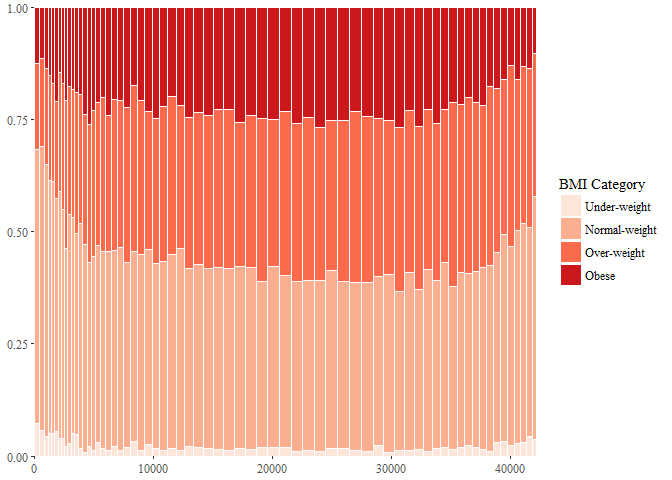
Adding statistics
1 2 3 4 5 6 7 8 9 10 11 | # perform chi.sq test (`RBMI` and `SRAGE_P`) results <- chisq.test(table(adult$RBMI, adult$SRAGE_P)) # melt results$residuals and store as resid resid <- melt(results$residuals) # change names of resid names(resid) <- c('FILL', 'X', 'residual') # merge the two datasets DF_all <- merge(DF_melted, resid) |
1 2 3 4 5 6 7 | # update plot command ggplot(DF_all, aes(ymin = ymin, ymax = ymax, xmin = xmin, xmax = xmax, fill = residual)) + geom_rect() + scale_fill_gradient2() + scale_x_continuous(expand = c(0,0)) + scale_y_continuous(expand = c(0,0)) + theme_tufte() |

Adding text
1 2 3 4 5 6 | # position for labels on x axis DF_all$xtext <- DF_all$xmin + (DF_all$xmax - DF_all$xmin) / 2 # position for labels on y axis index <- DF_all$xmax == max(DF_all$xmax) DF_all$ytext <- DF_all$ymin[index] + (DF_all$ymax[index] - DF_all$ymin[index])/2 |
1 2 3 4 5 6 7 8 9 10 | # plot ggplot(DF_all, aes(ymin = ymin, ymax = ymax, xmin = xmin, xmax = xmax, fill = residual)) + geom_rect(col = 'white') + # geom_text for ages (i.e. the x axis) geom_text(aes(x = xtext, label = X), y = 1, size = 3, angle = 90, hjust = 1, show.legend = FALSE) + # geom_text for BMI (i.e. the fill axis) geom_text(aes(x = max(xmax), y = ytext, label = FILL), size = 3, hjust = 1, show.legend = FALSE) + scale_fill_gradient2() + theme_tufte() + theme(legend.position = 'bottom') |
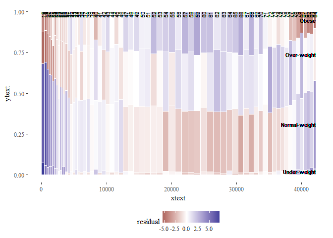
Generalizations
1 2 3 4 5 6 7 8 9 10 11 12 13 14 15 16 17 18 19 20 21 22 23 24 25 26 27 28 29 30 31 32 33 34 35 36 37 38 39 | # script generalized into a function mosaicGG <- function(data, X, FILL) { # Proportions in raw data DF <- as.data.frame.matrix(table(data[[X]], data[[FILL]])) DF$groupSum <- rowSums(DF) DF$xmax <- cumsum(DF$groupSum) DF$xmin <- DF$xmax - DF$groupSum DF$X <- row.names(DF) DF$groupSum <- NULL DF_melted <- melt(DF, id = c('X', 'xmin', 'xmax'), variable.name = 'FILL') DF_melted <- DF_melted %>% group_by(X) %>% mutate(ymax = cumsum(value/sum(value)), ymin = ymax - value/sum(value)) # Chi-sq test results <- chisq.test(table(data[[FILL]], data[[X]])) # fill and then x resid <- melt(results$residuals) names(resid) <- c('FILL', 'X', 'residual') # Merge data DF_all <- merge(DF_melted, resid) # Positions for labels DF_all$xtext <- DF_all$xmin + (DF_all$xmax - DF_all$xmin)/2 index <- DF_all$xmax == max(DF_all$xmax) DF_all$ytext <- DF_all$ymin[index] + (DF_all$ymax[index] - DF_all$ymin[index])/2 # plot g <- ggplot(DF_all, aes(ymin = ymin, ymax = ymax, xmin = xmin, xmax = xmax, fill = residual)) + geom_rect(col = 'white') + geom_text(aes(x = xtext, label = X), y = 1, size = 3, angle = 90, hjust = 1, show.legend = FALSE) + geom_text(aes(x = max(xmax), y = ytext, label = FILL), size = 3, hjust = 1, show.legend = FALSE) + scale_fill_gradient2('Residuals') + scale_x_continuous('Individuals', expand = c(0,0)) + scale_y_continuous('Proportion', expand = c(0,0)) + theme_tufte() + theme(legend.position = 'bottom') print(g) } |
1 2 | # BMI described by age (in x) mosaicGG(adult, 'SRAGE_P','RBMI') |

1 2 | # poverty described by age (in x) mosaicGG(adult, 'SRAGE_P', 'POVLL') |

1 2 | # `am` described by `cyl` (in x) mosaicGG(mtcars, 'cyl', 'am') |
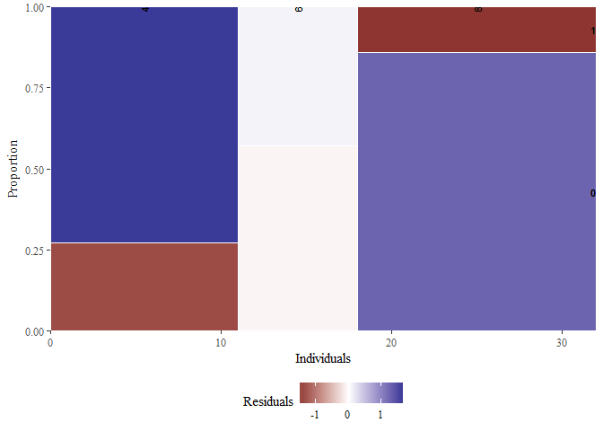
1 2 | # `Vocab` described by education mosaicGG(Vocab, 'education', 'vocabulary') |

SECTION 3¶
SECTION 4 - Cheat List¶
ggplot(data, aes(x = , y = ), col = , fill = , size = , labels = , alpha
= , shape = , line = , position = ‘jitter’)
1 2 3 4 5 6 7 8 9 10 11 12 13 | + geom_point()
+ geom_point(aes(), col = , position = posn.j)
+ geom_jitter()
+ facet_grid(. ~ x) # y ~ x
+ scale_x_continous('Sepal Length', limits = c(2, 8), breaks = seq(2, 8, 3))
+ scale_color_discrete('Species', labels = c('a', 'b', 'c'))
+ labs(x = , y = , col = )
|
posn.j <- position_jitter(width = 0.1)
Data
diamonds, prices of 50,000 round cut diamonds.economics, economics_long, US economic time series.faithfuld, 2d density estimate of Old Faithful data.luv_colours, colors().midwest, midwest demographics.mpg, fuel economy data from 1999 and 2008 for 38 popular models of car.msleep, an updated and expanded version of the mammals sleep dataset.presidential, terms of 11 presidents from Eisenhower to Obama.seals, vector field of seal movements.txhousing, Housing sales in TX.
Aesthetics
- x-axis.
- y-asix.
- color.
- fill.
- size (points, lines).
- labels.
- alpha.
- shape (points).
- linetype (lines).
aes, Define aesth.etic mappings.aes_(aes_q, aes_string), Define aesthetic mappings from strings, or quoted calls and formulas.aes_all, Given a character vector, create a set of identity mappings.aes_auto, Automatic aesthetic mapping.aes_colour_fill_alpha(color, colour, fill), Colour related aesthetics: colour, fill and alpha.aes_group_order(group), Aesthetics: group. aes_linetype_size_shape (linetype, shape, size), Differentiation related aesthetics: linetype, size, shape.aes_position(x, xend, xmax, xmin, y, yend, ymax, ymin), Position related aesthetics: x, y, xmin, xmax, ymin, ymax, xend, yend.
Position
position_dodge, Adjust position by dodging overlaps to the side.position_fill(position_stack), Stack overlapping objects on top of one another.position_identity, Don’t adjust positionposition_nudge, Nudge points.position_jitter, Jitter points to avoid overplotting.position_jitterdodge, Adjust position by simultaneously dodging and jittering.
Scales
expand_limits, Expand the plot limits with data.guides, Set guides for each scale.guide_legend, Legend guide.guide_colourbar(guide_colorbar), Continuous colour bar guide.lims(xlim, ylim), Convenience functions to set the axis limits.scale_alpha(scale_alpha_continuous, scale_alpha_discrete), Alpha scales.scale_colour_brewer(scale_color_brewer, scale_color_distiller, scale_colour_distiller, scale_fill_brewer, scale_fill_distiller), Sequential, diverging and qualitative colour scales from colorbrewer.orgscale_colour_gradient(scale_color_continuous, scale_color_gradient, scale_color_gradient2, scale_color_gradientn, scale_colour_continuous, scale_colour_date, scale_colour_datetime, scale_colour_gradient2, scale_colour_gradientn, scale_fill_continuous, scale_fill_date, scale_fill_datetime, scale_fill_gradient, scale_fill_gradient2, scale_fill_gradientn).scale_colour_grey(scale_color_grey, scale_fill_grey), Sequential grey colour scale.scale_colour_hue(scale_color_discrete, scale_color_hue, scale_colour_discrete, scale_fill_discrete, scale_fill_hue), Qualitative colour scale with evenly spaced hues.scale_identity(scale_alpha_identity, scale_color_identity, scale_colour_identity, scale_fill_identity, scale_linetype_identity, scale_shape_identity, scale_size_identity), Use values without scaling.scale_manual(scale_alpha_manual, scale_color_manual, scale_colour_manual, scale_fill_manual, scale_linetype_manual, scale_shape_manual, scale_size_manual), Create your own discrete scale.scale_linetype(scale_linetype_continuous, scale_linetype_discrete), Scale for line patterns.scale_shape(scale_shape_continuous, scale_shape_discrete), Scale for shapes, aka glyphs.scale_size(scale_radius, scale_size_area,
scale_size_continuous, scale_size_date, scale_size_datetime, scale_size_discrete), Scale size (area or radius).scale_x_discrete(scale_y_discrete), Discrete position.labs(ggtitle, xlab, ylab), Change axis labels and legend titles.update_labels, Update axis/legend labels.
Geometries
- point.
- line.
- histogram.
- bar.
- boxplot.
geom_abline(geom_hline, geom_vline), Lines: horizontal,
vertical, and specified by slope and intercept.geom_bar(stat_count), Bars, rectangles with bases on x-axisgeom_bin2d(stat_bin2d, stat_bin_2d), Add heatmap of 2d bin counts.geom_blank, Blank, draws nothing.geom_boxplot(stat_boxplot), Box and whiskers plot.geom_contour(stat_contour), Display contours of a 3d surface in 2d.geom_count(stat_sum), Count the number of observations at each location.geom_crossbar(geom_errorbar, geom_linerange, geom_pointrange), Vertical intervals: lines, crossbars & errorbars.geom_density(stat_density), Display a smooth density estimate.geom_density_2d(geom_density2d, stat_density2d, stat_density_2d), Contours from a 2d density estimate.geom_dotplot, Dot plotgeom_errorbarh, Horizontal error bars.geom_freqpoly(geom_histogram, stat_bin), Histograms and frequency polygons.geom_hex(stat_bin_hex, stat_binhex), Hexagon binning.geom_jitter, Points, jittered to reduce overplotting.geom_label(geom_text), Textual annotations.geom_map, Polygons from a reference map.geom_path(geom_line, geom_step), Connect observations.geom_point, Points, as for a scatterplot.geom_polygon, Polygon, a filled path.geom_quantile(stat_quantile), Add quantile lines from a quantile regression.geom_raster(geom_rect, geom_tile), Draw rectangles.geom_ribbon(geom_area), Ribbons and area plots.geom_rug, Marginal rug plots.geom_segment(geom_curve), Line segments and curves.geom_smooth(stat_smooth), Add a smoothed conditional mean.geom_violin(stat_ydensity), Violin plot.
Facets
- columns.
- rows.
facet_grid, Lay out panels in a grid.facet_null, Facet specification: a single panel.facet_wrap, Wrap a 1d ribbon of panels into 2d.labeller, Generic labeller function for facets.label_bquote, Backquoted labeller.
Annotation
annotate, Create an annotation layer.annotation_custom, Annotation: Custom grob.annotation_logticks, Annotation: log tick marks.annotation_map, Annotation: maps.annotation_raster, Annotation: High-performance
rectangular tiling.borders, Create a layer of map borders.
Fortify
fortify, Fortify a model with data.fortify-multcomp(fortify.cld, fortify.confint.glht, fortify.glht, fortify.summary.glht), Fortify methods for objects produced by.fortify.lm, Supplement the data fitted to a linear model with model fit statistics.fortify.map, Fortify method for map objects.fortify.sp(fortify.Line, fortify.Lines, fortify.Polygon, fortify.Polygons, fortify.SpatialLinesDataFrame, fortify.SpatialPolygons, fortify.SpatialPolygonsDataFrame), Fortify method for classes from the sp package.map_data, Create a data frame of map data.
Statistics
- binning.
- smoothing.
- descriptive.
- inferential.
stat_ecdf, Empirical Cumulative Density Function.stat_ellipse, Plot data ellipses.stat_function, Superimpose a function.stat_identity, Identity statistic.stat_qq(geom_qq), Calculation for quantile-quantile plot.stat_summary_2d(stat_summary2d, stat_summary_hex), Bin and summarise in 2d (rectangle & hexagons)stat_unique, Remove duplicates.- Coordinates.
- cartesian.
- fixes.
- polar.
- limites.
coord_cartesian, Cartesian coordinates.coord_fixed(coord_equal), Cartesian coordinates with fixed
relationship between x and y scales.coord_flip, Flipped cartesian coordinates.coord_map(coord_quickmap), Map projections.coord_polar, Polar coordinates.coord_trans, Transformed cartesian coordinate system.
Themes
theme_bwtheme_greytheme_classictheme_minimalggthemes